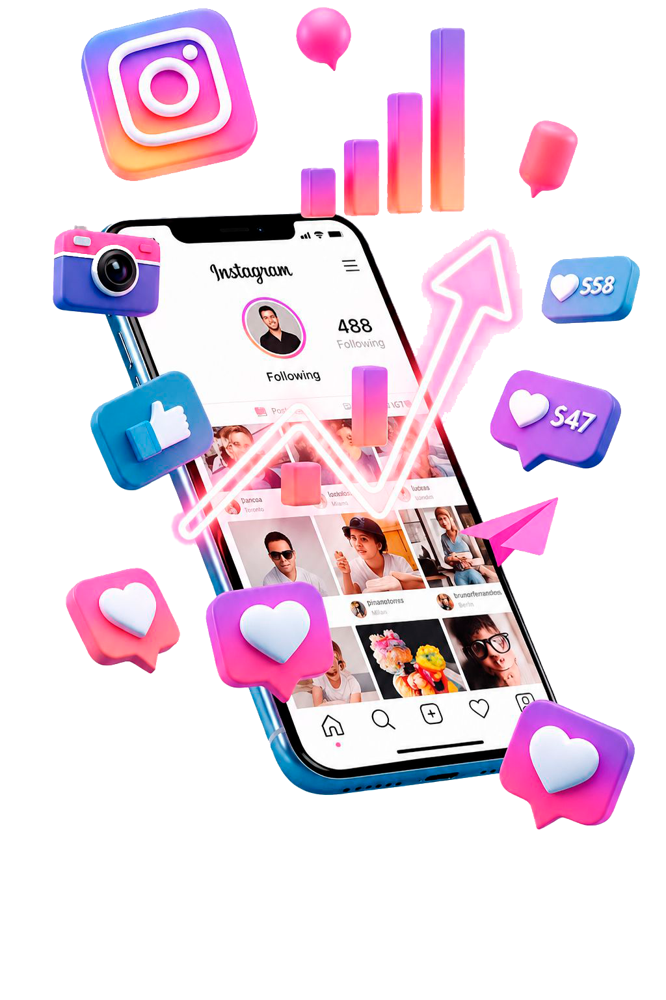

Scroll infinito
El scroll infinito permite seguir viendo contenido sin llegar nunca a un final claro. Esto hace que sea más difícil decidir cuándo parar.
No es falta de voluntad, es diseño. Las apps, las notificaciones, los algoritmos y el scroll infinito están pensados para captar nuestra atención y generar hábitos automáticos.
Esta sección explica qué hay detrás de ese uso constante y por qué a veces sentimos que nos cuesta tanto cortar con las redes sociales.

El scroll infinito permite seguir viendo contenido sin llegar nunca a un final claro. Esto hace que sea más difícil decidir cuándo parar.
Las notificaciones funcionan como pequeños llamados de atención. Aunque no siempre sean importantes, interrumpen lo que estamos haciendo.
Las plataformas aprenden qué contenidos nos interesan y nos muestran publicaciones similares para mantenernos más tiempo conectados.
A veces desbloqueamos el celular sin una razón concreta. Este gesto se convierte en un hábito automático.
Usar redes antes de dormir puede dificultar el descanso, ya que la exposición constante a estímulos mantiene la mente activa.
Revisar el celular mientras estudiamos, trabajamos o realizamos otras actividades puede cortar la atención.
Estar pendiente del celular durante una conversación puede afectar la calidad del vínculo con otras personas.
Ver todo el tiempo vidas editadas, logros o cuerpos idealizados puede generar comparación e inseguridad.

Silenciar alertas innecesarias puede ayudarte a reducir interrupciones.
Definir horarios o espacios libres de pantalla puede mejorar tu descanso.
Sacar de la pantalla principal las apps que más usás puede ayudarte a entrar menos por impulso.